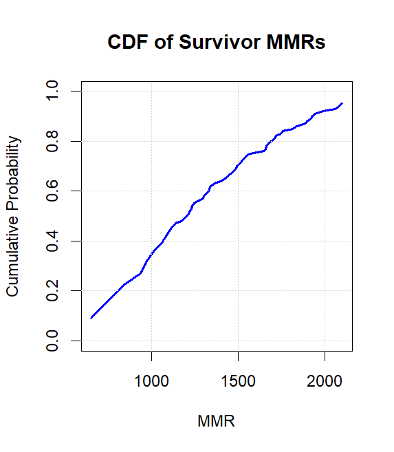
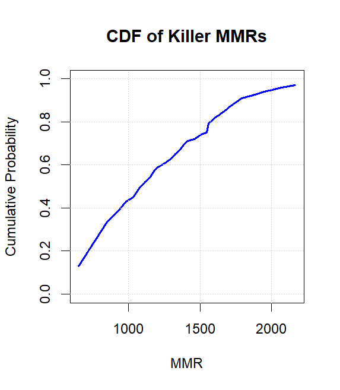

Understanding Skill-Based Matchmaking in Dead by Daylight
July 2, 2025
Disclaimer
The information included in this post is for educational purposes only. Any material on this webpage may not be reproduced, retransmitted, or redisplayed other than for personal or educational use.
Introduction
Skill-based matchmaking (SBMM) is a form of matchmaking that pairs players in online multiplayer games based on their skill levels. To evaluate player skill, many games use a metric called matchmaking rating (MMR), a numerical value that adjusts dynamically in response to in-game performance. In Dead by Daylight, MMR is hidden, meaning that players cannot normally view their rating or track how it changes after each match. However, players can use Fiddler Classic to capture the game's network traffic and observe their MMR values manually.
Rating System
Dead by Daylight uses a customized ranking system based on the Glicko-2 rating system. Every player in the Glicko-2 system has a rating, r, a rating deviation, RD, and a rating volatility σ. The rating measure indicates the player's estimated skill level. The higher the player's rating, the better that they are assumed to be. The rating deviation measure indicates the uncertainty in the player's rating. A high RD indicates that the player has either competed infrequently or has played only a few matches, making it difficult to accurately assess their skill. In contrast, a low RD suggests that the player competes regularly, allowing the system to estimate their skill level with greater confidence. The volatility measure indicates the degree of expected fluctuation in the player's rating. For example, a player's rating volatility would be low when they performed at a consistent level, but it would increase if they had exceptionally strong results after that period of consistency. Notably, the system maintains both a primary rating value and an additional parameter referred to as realRating. Unlike rating, which fluctuates slightly over time even without new matches, realRating remains fixed until a match is played. This suggests that realRating represents the player's last confirmed MMR, while rating serves as a live, continuously adjusted estimate.
It is often more informative to summarize a player's skill as an interval rather than as a single rating value, since the rating is always accompanied by both an associated RD and a volatility. Together, these parameters define a range that more accurately reflects the system's confidence in the player's true skill. One common method is to report a 95% confidence interval, which provides a range in which the player's true skill is likely to fall. This interval is calculated as the player's rating plus or minus twice the RD. For example, if a player has a rating of 1400 with an RD of 50, then the 95% confidence interval would range from 1300 to 1500. This means that we are 95% confident that the player's true skill falls within that interval. A lower RD would result in a narrower interval, indicating greater confidence in the rating's accuracy. Importantly, the volatility measure does not factor into the confidence interval calculation.
Default Parameter Values
In Dead by Daylight, players start with a rating of approximately 650, an RD of 347.4356, a realRating of exactly 650, and a volatility of 0.06.
Calculation
Rating
Both rating and realRating increase after a win, decrease after a loss, and remain unchanged in the event of a draw. Though, the extent of actual updates depends on each player's RD and on how "surprising" the outcome is to the system. For example, unbalanced matches yield only minor rating adjustments when the favorite wins, but yield significant updates when the favorite loses.
Rating Deviation
RD changes both in response to match outcomes and during periods of inactivity. Match outcomes always decrease a player's RD, while inactivity causes it to increase. This reflects the system's confidence: the more matches a player completes, the more precisely their skill can be estimated, resulting in a lower RD. Conversely, as time passes without new data, uncertainty grows, and RD increases to reflect that reduced confidence. Notably, RD for killers drops more significantly after each match than for survivors. This may be due to the asymmetrical structure of the game. Since killers play solo against four survivors, the system can more quickly isolate and assess their individual performance. However, survivor outcomes are influenced by greater team-based variability.
Rating Volatility
The volatility parameter remains nearly constant, centered around its default value of 0.06. Observed data shows that it floats within a narrow range—approximately between 0.059 and 0.061. While the Glicko-2 system allows volatility to adjust more dynamically in response to inconsistent performance, Dead by Daylight's implementation appears to keep it tightly constrained.
MMR Segmentation Between Survivors and Killers
Dead by Daylight's ranking system uses a shared MMR for all survivors, but assigns a separate MMR for each killer. This distinction explains why survivors can switch characters after being matched, whereas killers are locked into the specific killer that they selected.
Matchmaking Process
When a player enters the matchmaking queue, the system initially searches within a narrow MMR range centered on the player's own MMR. If the player is in a party, then the system calculates the average MMR of all group members and uses that value in the search. If no suitable match is found within a short time frame, then the search range gradually expands to include a broader pool of MMR values until a match is formed. Dead by Daylight uses a unidirectional matchmaking approach, meaning that once a player has waited long enough, the system prioritizes forming a match for that player by pulling in others with a compatible MMR—even if those players have been in the queue for less time. As long as all participants fall within the system's maximum allowable MMR range, a match will eventually be created.
Soft Cap
Dead by Daylight employs a soft cap on MMR to manage matchmaking at the highest skill levels. Above this threshold, a player's MMR may continue to increase internally, but the matchmaking system treats all values beyond the soft cap as functionally equivalent, grouping those players into a broad matchmaking pool. This prevents players from climbing so high that finding viable opponents becomes difficult while still prioritizing matchups with closer MMR values when possible.
Match data indicates that the matchmaking pool starts broadening around 1900 MMR, where players often face higher-rated opponents more frequently. In this range, even players with modest performance (for example, 1 kill) can still see positive MMR gains, suggesting a relatively forgiving progression and a shift in matchmaking pools rather than a hard limit on rating growth.
The true MMR soft cap appears around 2100 MMR, where gains from wins shrink significantly and losses become more punishing. Here, even strong match performances yield minimal rating increases, indicating that the system is compressing rating differences. Players must achieve consistently high performance against similarly skilled or stronger opponents to maintain progression. This design ensures balanced matchmaking among the top tier of players by slowing MMR growth and effectively "flattening" the rating scale beyond this point.
Ranked Trial Mechanics
During ranked trials, the system evaluates the match as a set of individual interactions between the killer and each survivor. In effect, every survivor is engaged in a mini-trial against the killer, and vice versa, where outcomes such as wins, losses, and draws are determined independently. The system tracks each of these outcomes, aggregates them, and adjusts the player's MMR accordingly.
Modifiers
Opponent Ratings and UncertaintyThe amount of MMR a player gains or loses also depends on their opponents' ratings and how confident the system is in those ratings:
- Players gain more MMR by defeating higher-rated opponents with low RDs.
- Players lose more MMR when defeated by lower-rated opponents with low RDs.
- If the player's own RD is high, then their MMR will change more significantly after each match.
- If the player's opponents have high RDs, then their own MMR will change less significantly after the match.
If survivors queue as a group, then each player's MMR change is partially influenced by the outcomes of the other group members:
- For each group member that escapes:
- Increased MMR gain upon escaping.
- Reduced MMR loss upon dying.
- For each group member that dies:
- Reduced MMR gain upon escaping.
- Increased MMR loss upon dying.
Match Outcome Conditions
SurvivorsSurvivors gain MMR by escaping from ranked trials and lose MMR when they die:
- Dying in the trial is considered a loss and results in an MMR decrease.
- Escaping through the hatch is considered a draw and does not affect MMR.
- Escaping through the exit gate is considered a win and results in an MMR increase.
Killers gain MMR by killing survivors in ranked trials and lose MMR if survivors escape:
- Killing 0 or 1 survivor(s) is considered a loss and results in an MMR decrease.
- Killing 2 survivors is considered a draw. However, it may still result in a slight increase or decrease in MMR depending on the ratings of the players involved.
- Killing 3 or 4 survivors is considered a win and results in an MMR increase.
- The system ignores survivors' individual contributions during the match. MMR changes are based solely on whether they escape through the exit gate.
- The system considers only whether survivors die or escape. How a survivor dies (sacrificed, mori'd, or bled out) is irrelevant to MMR calculations.
- While killer MMR outcomes generally follow the 0/1 kill(s) = loss, 2 kills = draw, and 3/4 kills = win structure, exceptions exist. For example, a killer may still gain MMR from a match in which they only killed 1 survivor if the survivors that they faced had significantly higher ratings.
- If the killer disconnects during a match, then survivors will not receive an MMR increase—even if they are still alive when the disconnection occurs.
Cross-Character MMR Scaling Mechanism
Despite each killer having a separate MMR, Dead by Daylight employs a cross-character MMR scaling mechanism. This mechanism makes it so that the killer with the highest MMR on a player's account influences the starting MMR of their other killers. The goal is to prevent experienced players from being matched against lower-skilled survivors simply because they chose a killer that they don't use frequently.
The scaling is non-linear and follows a pattern of diminishing returns: as a player's top killer MMR increases, the starting MMR of their other killers increases as well, but at a gradually decreasing rate. Interestingly, there are also points where the scaling ratio briefly increases instead of continuing to decline, suggesting that the system may apply soft thresholds or adjustments at certain MMR ranges. To better understand how Dead by Daylight's cross-character MMR scaling mechanism works in practice, I recorded MMR values from my own account. The table below shows a sample of that data, highlighting the relationship between the MMR of my highest-rated killer and the MMR assigned to other killers.
| Top Killer MMR | Scaled MMR | Scaling Ratio |
|---|---|---|
| 1245 | 960 | 0.7710843373 |
| 1256 | 969 | 0.7714968153 |
| 1300 | 996 | 0.7661538462 |
| 1379 | 1051 | 0.762146483 |
| 1461 | 1114 | 0.7624914442 |
| 1521 | 1157 | 0.7606837607 |
| 1558 | 1181 | 0.7580231065 |
| 1607 | 1213 | 0.7548226509 |
| 1667 | 1251 | 0.75044991 |
| 1701 | 1267 | 0.7448559671 |
| 1794 | 1325 | 0.7385730212 |
| 1853 | 1358 | 0.7328656233 |
| 1900 | 1345 | 0.7078947368 |
| 2042 | 1447 | 0.708619001 |
| 2152 | 1530 | 0.7109665428 |
| 2212 | 1523 | 0.688517179 |
Unfortunately, I was unable to determine exactly where the cross-character MMR scaling mechanism begins to take effect. However, it likely starts activating even before the first recorded point in the table.
Rating Quantiles
As a reminder, MMR is a numerical value that represents a player's skill level within the matchmaking system. A quantile is a statistical measure that divides a set of data into equal-sized portions. Each quantile represents a point in a ranked distribution where a specific percentage of data falls below that value. For example, the 0.75 quantile indicates the rating below which 75% of players fall. In the context of Dead by Daylight, rating quantiles tell us how player skill is distributed across the population. Importantly, rating quantiles for survivors are calculated globally, since all survivors share the same MMR pool. For killers, while each killer has a separate MMR, the quantiles are still drawn from the same overall killer population. This means that the same quantile thresholds apply regardless of which killer you're using, even though their individual MMRs are tracked separately.
Survivors
The quantile data in this section is derived from personal match data collected on North American servers between May 17 and May 31, 2025. The values reflect MMR observations gathered through participation in ranked trials.
Cumulative Distribution Function Plot

You can reproduce the CDF shown above using the following R code:
# Survivor data
survivor_mmrs <- c(650, 847, 934, 970, 1021, 1056, 1111, 1137, 1175, 1213, 1220, 1228, 1233, 1247, 1266, 1296, 1303, 1319, 1329, 1342, 1366, 1400, 1424, 1488, 1491, 1511, 1519, 1549, 1567, 1650, 1658, 1662, 1674, 1691, 1710, 1719, 1747, 1758, 1813, 1839, 1890, 1896, 1923, 1929, 1947, 1994, 2061, 2083, 2102)
survivor_quantiles <- c(0.09, 0.23, 0.27, 0.32, 0.37, 0.39, 0.45, 0.47, 0.48, 0.51, 0.52, 0.53, 0.54, 0.55, 0.56, 0.57, 0.58, 0.59, 0.60, 0.62, 0.63, 0.64, 0.65, 0.69, 0.70, 0.71, 0.72, 0.74, 0.75, 0.76, 0.77, 0.78, 0.79, 0.80, 0.81, 0.82, 0.83, 0.84, 0.85, 0.86, 0.87, 0.88, 0.89, 0.90, 0.91, 0.92, 0.93, 0.94, 0.95)
# Plot Survivor CDF
plot(survivor_mmrs, survivor_quantiles, type = "l",
main = "CDF of Survivor MMRs",
xlab = "MMR",
ylab = "Cumulative Probability",
col = "blue", lwd = 2,
ylim = c(0, 1))
grid()
Quantile Table
| MMR | Quantile |
|---|---|
| 650 | 0.09 |
| 847 | 0.23 |
| 934 | 0.27 |
| 970 | 0.32 |
| 1021 | 0.37 |
| 1056 | 0.39 |
| 1111 | 0.45 |
| 1137 | 0.47 |
| 1175 | 0.48 |
| 1213 | 0.51 |
| 1220 | 0.52 |
| 1228 | 0.53 |
| 1233 | 0.54 |
| 1247 | 0.55 |
| 1329 | 0.60 |
| 1424 | 0.65 |
| 1491 | 0.70 |
| 1567 | 0.75 |
| 1691 | 0.80 |
| 1813 | 0.85 |
| 1929 | 0.90 |
| 2102 | 0.95 |
Killers
The quantile data in this section is derived from personal match data collected on North American servers between June 1 and June 10, 2025. The values reflect MMR observations gathered through participation in ranked trials.
Cumulative Distribution Function Plot

You can reproduce the CDF shown above using the following R code:
# Killer data
killer_mmrs <- c(650, 846, 918, 982, 1031, 1072, 1115, 1150, 1179, 1208, 1257, 1301, 1325, 1343, 1359, 1379, 1399, 1415, 1461, 1508, 1549, 1558, 1573, 1593, 1608, 1630, 1649, 1691, 1710, 1794, 1854, 1900, 1950, 2021, 2070, 2168)
killer_quantiles <- c(0.13, 0.33, 0.38, 0.43, 0.45, 0.49, 0.52, 0.54, 0.57, 0.59, 0.61, 0.63, 0.65, 0.66, 0.67, 0.69, 0.70, 0.71, 0.72, 0.74, 0.75, 0.79, 0.80, 0.81, 0.82, 0.83, 0.84, 0.86, 0.87, 0.91, 0.92, 0.93, 0.94, 0.95, 0.96, 0.97)
# Plot Killer CDF
plot(killer_mmrs, killer_quantiles, type = "l",
main = "CDF of Killer MMRs",
xlab = "MMR",
ylab = "Cumulative Probability",
col = "blue", lwd = 2,
ylim = c(0, 1))
grid()
Quantile Table
| MMR | Quantile |
|---|---|
| 650 | 0.13 |
| 846 | 0.33 |
| 918 | 0.38 |
| 982 | 0.43 |
| 1031 | 0.45 |
| 1072 | 0.49 |
| 1115 | 0.52 |
| 1150 | 0.54 |
| 1179 | 0.57 |
| 1208 | 0.59 |
| 1257 | 0.61 |
| 1301 | 0.63 |
| 1325 | 0.65 |
| 1399 | 0.70 |
| 1549 | 0.75 |
| 1573 | 0.80 |
| 1649–1691 | 0.84–0.86 |
| 1710–1794 | 0.87–0.91 |
| 2021 | 0.95 |
| 2070 | 0.96 |
| 2168 | 0.97 |